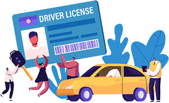

About Us
License renewal is a renew a driving license in India, the driver will typically need to provide their current license, proof of identity, and proof of address. In some cases, drivers may also need to undergo a medical examination or provide a medical certificate.Renewal of a driver's licence can be done both online and in-person at an RTO office in Maharashtra. If you want to visit the Regional Transport Office in person, bring the necessary information and documentation to an RTO office.An application for renewal shall be entertained not more than one month before the date of expiry of the licence. If the application is late for more than five years after the date of expiry of the licence, the applicant should undergo all the formalities to obtain a fresh licence.
No, it is not compulsory to undergo a driving test for the renewal of your driving licence. However, if you have applied for the renewal at the age of 50+ or you have some medical conditions, you might be required to appear for a test. What is the validity of the driving licence before it is due for renewal?Yes, you can renew your permanent driving licence when it approaches its validity period of 20 years. It is crucial to renew it promptly after expiration. The licence renewal fee for the permanent driving licence is Rs. 200.If the owner desires to remove or sell his vehicle outside the jurisdiction of the registering authority within or outside the State then the owner shall file the application for issue of clearance certificate with the registering authority where the vehicle is registered.
Application under scrutiny means applicant is required to visit the concerned RTO for physical verification of documents, and submit his/ her Biometrics to complete the application process.Can I drive while waiting for my licence renewal in India? No, it is illegal to drive with an expired licence. It is essential to renew the licence within the grace period to avoid penalties and legal consequences.In India, there is no maximum age limit to obtain a car driving license, provided that the individual meets certain health and fitness criteria.RTO refers to Return to Origin. When the parcel is not delivered at the customer's doorstep due to any reason, it is marked as RTO and sent back to the seller's pickup address. RTO is the acronym for return to origin.